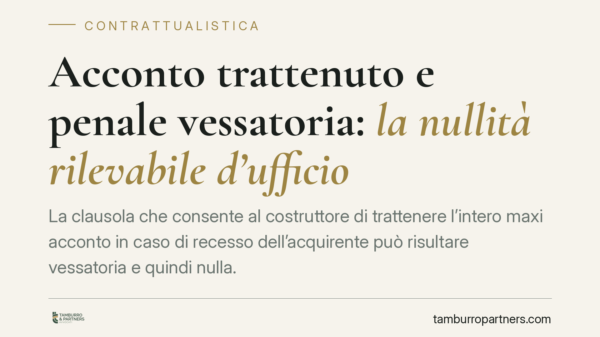

Acconto trattenuto e penale vessatoria: la nullità rilevabile d'ufficio
La clausola che consente al costruttore di trattenere l'intero maxi acconto in caso di recesso dell'acquirente può risultare vessatoria e quindi nulla. Il tema tocca migliaia di preliminari di compravendita immobiliare conclusi tra privati e imprese. Vediamo il quadro normativo consumeristico, il regime della nullità di protezione e le mosse concrete per chi compra e per chi vende.

Il caso: il maxi acconto e la penale che "trattiene tutto"
Lo schema è ricorrente. Nel preliminare di compravendita di un immobile, l'acquirente versa un acconto rilevante — talvolta una quota significativa del prezzo — accompagnato da una clausola penale: se l'acquirente non conclude l'affare, il costruttore trattiene l'intera somma.
La questione giuridica è se una penale di questo tipo, manifestamente sproporzionata rispetto al prezzo e al pregiudizio effettivo, sia valida quando il contratto è stipulato tra un'impresa (il costruttore) e un consumatore.
Inquadramento normativo
Il riferimento è il Codice del Consumo (D.lgs. 206/2005), attuativo della Direttiva 93/13/CEE sulle clausole abusive nei contratti con i consumatori.
L'art. 33, comma 2, lett. f) del Codice del Consumo presume vessatoria la clausola che impone al consumatore, in caso di inadempimento o di recesso, il pagamento di una somma di denaro a titolo di risarcimento, clausola penale o altro titolo equivalente, di importo manifestamente eccessivo. È la norma specifica sul punto.
La conseguenza è disciplinata dall'art. 36 del Codice del Consumo: le clausole vessatorie sono nulle, mentre il resto del contratto resta valido. Si tratta di una nullità di protezione: opera cioè solo a vantaggio del consumatore e non può essere fatta valere a suo danno. Il giudice la rileva d'ufficio, in coerenza con la giurisprudenza della Corte di Giustizia UE (sentenze *Pannon*, C-243/08, e *Banif Plus Bank*, C-472/11), che impone al giudice nazionale di verificare anche d'ufficio il carattere abusivo delle clausole, nel rispetto del contraddittorio.
È qui la differenza con lo strumento di diritto comune. L'art. 1384 del Codice civile consente al giudice di ridurre la penale eccessiva, ma non la elimina. Nel rapporto con il consumatore, invece, la clausola vessatoria non si riduce: è nulla e priva di effetti. La penale sproporzionata, in altre parole, non viene "ricalibrata", ma semplicemente cade.
> Nota sulla fonte: la pronuncia di legittimità richiamata dalla stampa specializzata non risulta, allo stato, verificabile negli estremi (numero e anno) sul repertorio ufficiale. In questa sede richiamiamo pertanto il solo quadro normativo e la giurisprudenza eurounitaria consolidata, che sono i riferimenti certi e già sufficienti a inquadrare la questione.
Implicazioni pratiche
Per l'acquirente-consumatore il punto è rilevante: anche se ha firmato una clausola che prevede la perdita dell'intero acconto, quella clausola può essere contestata e dichiarata nulla se la somma trattenuta è manifestamente eccessiva rispetto al prezzo dell'immobile e al danno realmente subito dal venditore. Il rilievo della nullità può avvenire anche d'ufficio e, secondo l'orientamento eurounitario, nelle varie fasi del giudizio.
Per il costruttore-professionista cambia la logica di redazione del contratto. Una penale "blindata", costruita per trattenere tutto, è un rischio: se giudicata vessatoria, non viene semplicemente ridotta ma cade del tutto, lasciando l'impresa senza la tutela convenzionale che credeva di avere.
Resta fermo che la valutazione è sempre concreta: contano l'entità dell'acconto rispetto al prezzo, la sproporzione rispetto al pregiudizio e il complessivo assetto degli obblighi tra le parti.
Cosa fare in concreto
Se sei l'acquirente (consumatore):
- Conserva il preliminare, la ricevuta dei versamenti e ogni comunicazione con il venditore.
- Verifica il rapporto tra acconto versato e prezzo totale: una sproporzione marcata è il primo indice di possibile vessatorietà.
- Non dare per persa la somma solo perché hai firmato: la clausola potrebbe essere nulla.
Se sei il costruttore (professionista):
- Rivedi i modelli di preliminare, calibrando la penale su parametri ragionevoli e documentabili.
- Evita clausole che trattengano forfettariamente l'intero acconto a prescindere dal danno.
Per entrambi:
- È opportuno un esame professionale del singolo contratto prima di agire o resistere, perché l'esito dipende dalle circostanze concrete.
In sintesi
Nel contratto tra impresa e consumatore la penale che trattiene l'intero acconto non vive in una zona franca. Se manifestamente eccessiva, è vessatoria ai sensi dell'art. 33, comma 2, lett. f) del Codice del Consumo e colpita da nullità di protezione ex art. 36, rilevabile anche d'ufficio. Non una riduzione, come nell'art. 1384 c.c., ma una vera e propria caduta della clausola.
Ogni contratto ha il suo equilibrio.
Se vuoi una revisione delle clausole o una redazione su misura, scrivi allo studio. Ti rispondiamo entro un giorno lavorativo.